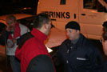
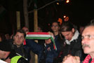
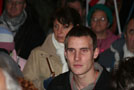

Csíkos zászlók minden mennyiségben
A Gumilövedék Kht. munkatársai. Police blogján azt olvastam, hogy egy központi ORFK rendelet nemrég elõírta, hogy legyen jelvény a bevetési ruhán is, amin eleddig még szabályszerûen sem volt. Biztos ezekrõl is leesett.
A HVIM hozott bulikamiont
Õ fogja rendezni

Lármafa
Gyüledezik a nép
Egy idõs néni tágra nyílt szemekkel nézte a kamiont, és megkérdezte, hogy ezzel fogják-e elvinni majd az embereket? Mondtam, hogy igen, ez az újfajta rabomobil, jó sokan beleférnek, és azért nyitott, hogy szállítás közben lehessen lõni õket gumilövedékkel. Nagyon felháborodott.
Jött a Hír TV. A stáb lelkesen dolgozott, aztán állítólag mégse ment semmi a tüntetésrõl a tévében.
Címert tessék
Kérdeztem, nem túl lenini-e ez a fordulat, de állítólag direkt az
A HVIM is észrevette
Modern korunkban már nem ólommal lõnek a tömegbe
Zagyva Gyula, a HVIM elnöke egyeztet egy rendõrrel, akin nincs sapka, és ez állítólag szabálytalan
Zászlófeszítés
Molnár Balázs küldi ezt a képet mindenkinek, aki szereti
A kitûzõjére valamiért öt csík is jutott. Az egyik biztos tartalék.
A zászló hideg ellen is jó
Mindjárt kezdõdik a só
Munkaeszköz
Budaházy Edda is eljött, és hozta a szokásos transzparenseket
Egyre több zászló érkezett
Ja, igen, Gyuri, ha épp arra bújkálsz, nézz be a boltba, meghívlak egy pizzára
Megkérdeztem a srácot, készíthetek-e róla egy portrét. "- Hö?" "- Lefényképezhetlek?" "- Ööö, hö!" És lefényképeztem.
Rövidesen megérkezett az addig a Szabadság téren tüntetõ, több száz fõs tömeg
Csíkot tessék
Hirtelen annyian lettünk, mint az oroszok
Mindenki áhítattal nézte...

... Patrubány Miklós beszédét, aki emlékeztetett, hogy két évvel ezelõtt itt, a Kempinsky szállóban koccintott Medgyessy a románokkal Erdély elszakításának évfordulójára, s hogy a román miniszterelnök csakis ezért utazott Budapestre. Én csak halkan jegyzem meg, hogy a Kempinski fõbejáratán szerényen ott díszeleg a világ legnagyobb szabadkõmûves szervezetének, a Rotary Club-nak a táblája.
Jelkép
Ezután a HVIM erdélyi szervezetétõl érkezett levelet olvasta fel e kedves hölgy, melyben szó esett a Babes-Bolyai egyetem körül zajló okoskodásról. Ha valaki nem tudná, az egyetem az EU felé játssza a jófejet, hogy õk mekkora multikulti, meg békésegyüttélés, közben pedig csendõrökkel akadályozzák meg, hogy magyar nyelvû táblák kerüljenek az egyetem folyosóira.
Ezt lehetett látni a kamionról
Megjött Toroczkai is, hurrá
A Hun Szövetség is eljött

Az ott, az ávós bácsi fején egy csuklya. Hátha titokban kell verni megint.
Toroczkai megharapta a mikrofont, aztán elmondta, hogy mekkora ganéság a HVIM tervezett betiltása. Lássuk be, igaza van.
Errõl a könyvrõl majd írok recenziót, még olvasgatom. Kapható lesz a boltban is.

A "bolond Sanyi" fedõnevû úriember nagyon figyelmesen hallgatta a beszédeket. Késõbb mutatott nekem egy füzetet, és azt mondta, "ebben minden benne van", és hívjam fel Waszlavikot, mert õ tudja. Meglesz.

Távolságmérés nemzetiszínû zászlóval
Magyarok
Még több magyarok
Landesmann rabbi agyfaszt kapna, ha látná
A tömeg lassan megindult, élen a kamionnal. Én a kamion lehajtható hátulján álltam, onnan fotóztam, minek eredményeképp az összes többi fotós is oda akart felállni, és ebbõl remek lökdösõdés lett.
Könnyûék
Novák Elõd megjavíttatta a dobját, bár azt mondja, már nem szól olyan szépen
Elegáns hun fejfedõ
Gonda Laci fárasztja Toroczkait
Gyurcsánytakarodj.

Portrék a tömegbõl
Õ éppen tegnap volt nálam polóért, családostul :)
A lányok angyalok
A Deák téren
Bácsi

Jó sokan voltunk, legalább ezer-ezerötszázan
A Bajcsy-Zsilinszky úton
Nemzeti tánc
Blogadmin tüntet

Szent István bazilikája elõtt
Demonstratív söprû
LL Junior betámaszt
A menetbiztosítás
Rövid szöveges üzenet
Fáklyával is lehet hülye fejet vágni
Azonosítók még mindig sehol

Azazhogy mégis? Minden rendõr sisakján egy ilyen kis sünike volt látható. Megkérdeztem a faszit, hogy ez mit jelent, mire hetykén közölte: "Azt, hogy 23-án mi gyõztünk!" No, hát remélem, ezek után már feláll a fasza, és örülök, hogy egy demokratikus országban a rendõrség büszke rá, ha legyõzi az állampolgárokat.
Lefényképeztem a faszit szembõl is, nehogy már kimaradjon a következõ fára húzásból
Megérkeztünk a Markó utcába
Nagy zászló
Ez itt Jenny. Azért vicsorog, mert azt mondtam neki, hogy "Gyurcsány." A "reform" szóra ugat is.

A rendõrség valamiért kordont húzott a tüntetés helyszínének közepére, keresztben. Hamar le is döntöttük.
Bolond Sanyi ennek felettébb örült
A kamion megállt, következtek a beszédek
Toroczkai mondott néhány viccet, aztán felkonferálta Budaházy Eddát
Edda a politikai foglyok szabadon bocsátásáért emelt szót, majd bejelentette, hogy már megint befújt a szél az ablakán egy CD-t, amin a bátyja beszél, és lejátszotta a tömegnek
A tömeg csendesen hallgatta, majd tapsolt. A beszéd teljes szövege elolvasható a kuruc.info-n.